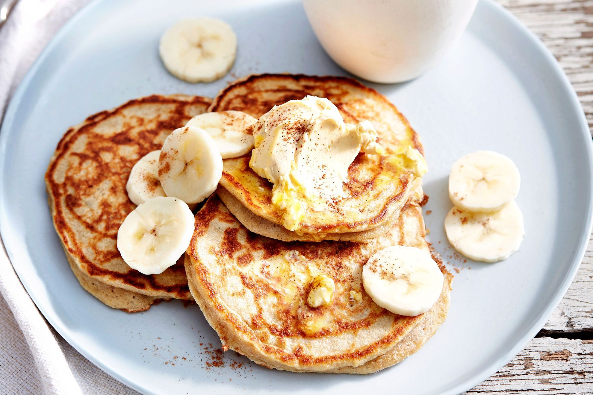

Home
Banana Pancake

Description
Looking to have a quick sweet dessert? Banana pancake is the way!
Fluffy banana pancakes are easy to make and naturally sweet.
Look below for the ingredients required.
Ingredients
- Dry Ingredients
- 1 cup all-purpose flour
- 1 tablespoon baking powder
- 1/4 teaspoon salt
- 1/2 teaspoon cinnamon( optional)
- Wet Ingredients
- 3/4 cup mashed overripe banana
- 1 large egg
- 3/4 cup milk
- Nonstick cooking spray or a little butter/oil for the pan
- For Serving:
- Sliced bananas
- Maple syrup
Steps
- Combine dry ingredients: In a medium bowl, whisk together the flour, baking powder, cinnamon, and salt.
- Combine wet ingredients: In a separate, larger bowl, beat the mashed banana and egg until blended. Whisk in the milk until combined.
- Mix wet and dry: Pour the wet ingredients into the dry ingredients and whisk until just combined.
- Heat the pan: Heat a large nonstick pan or griddle over medium heat. Grease it with butter or cooking spray.
- Cook the pancakes: Pour about 1/4 cup of batter per pancake onto the hot pan. Cook for 2-3 minutes on the first side, until bubbles form on the surface and the edges look set and golden brown.
- Flip and finish: Gently flip the pancakes and cook for another 1-2 minutes on the other side, until cooked through.
- Serve: Serve the pancakes warm, topped with sliced bananas and a drizzle of maple syrup.
Reference
Feel Good Foodie